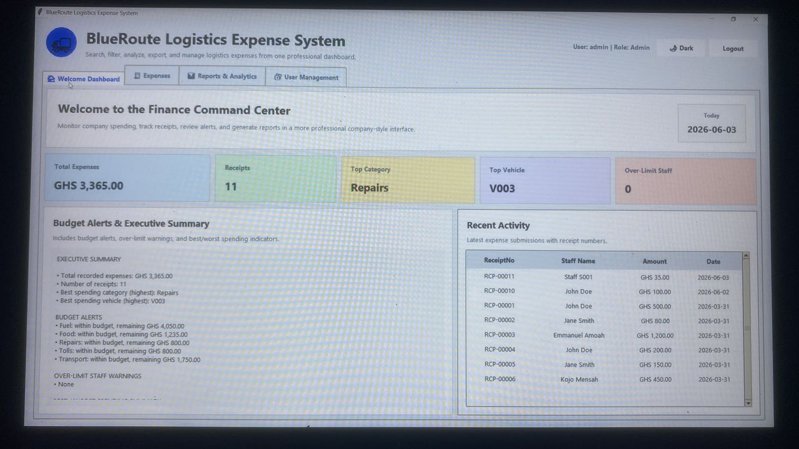

01
Featured Project
Business Operations
BlueRoute Logistics Expense System
A logistics finance dashboard designed to help a business search, filter, analyse, export, and manage company expenses from one professional interface. This project demonstrates my ability to think through business needs, organise data, and present information clearly for decision-makers.
Finance command centre for expense tracking, receipt counts, top spending categories, and vehicle-related cost visibility.
Budget alert concept with over-limit warnings and executive summary indicators for spending performance.
Recent activity feed showing receipt numbers, staff names, amounts, and transaction dates for quick review.
User management module concept with administrator controls and dark mode toggle for improved usability.
Reports and analytics area for generating/exporting finance reports and improving management visibility.